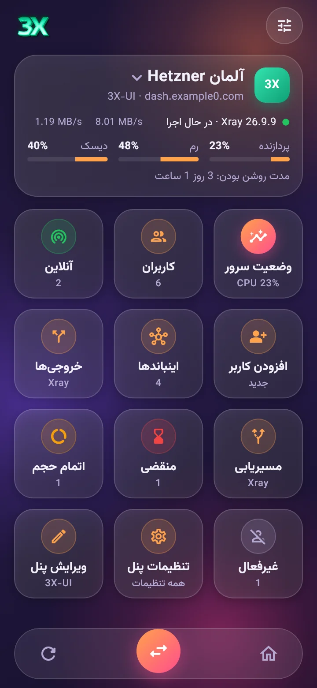
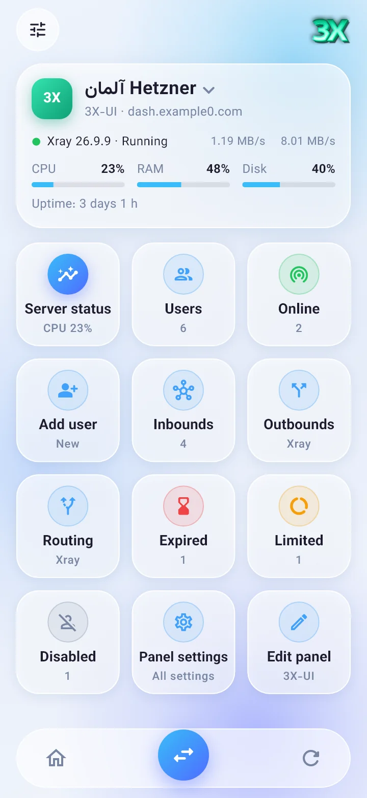
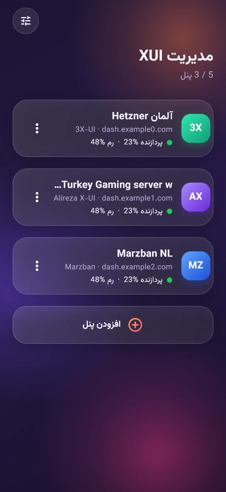
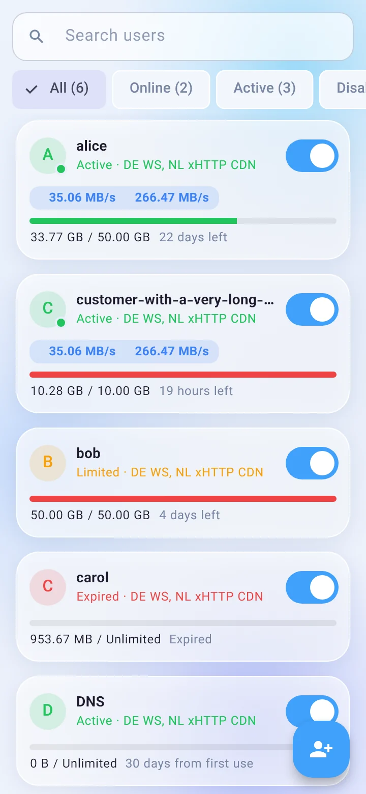
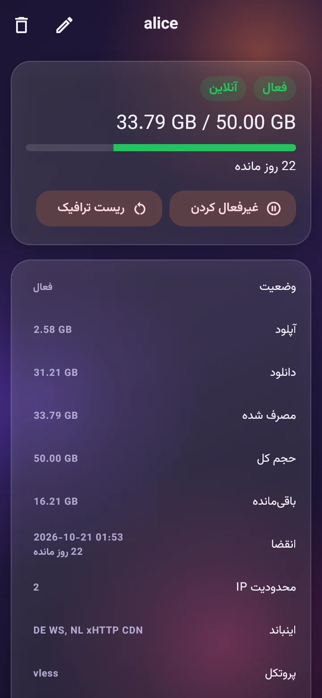
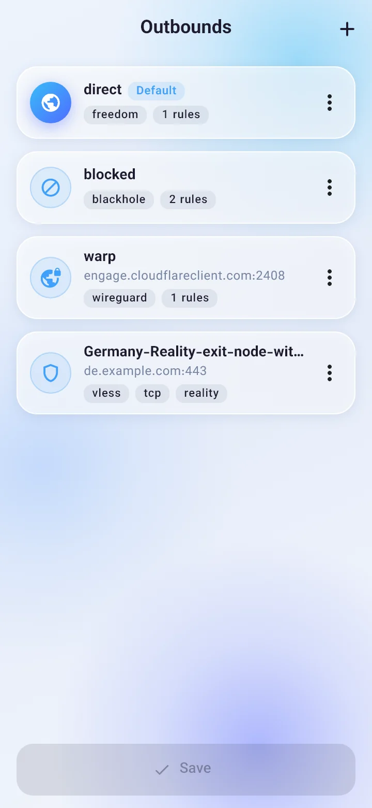
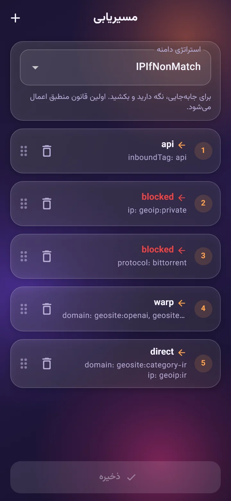
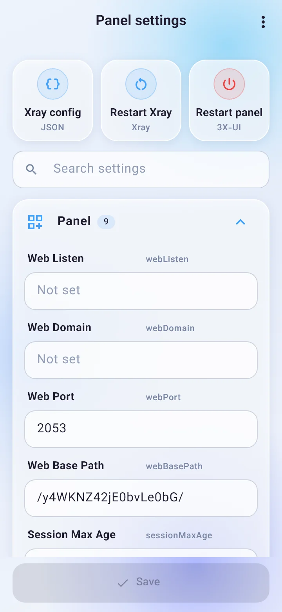
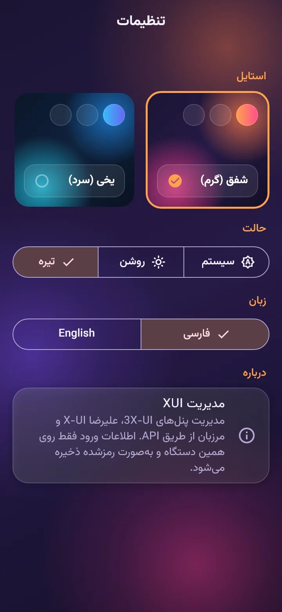

پنلهایت را از روی گوشی مدیریت کن
Your panels, in your pocket
یک برنامه اندروید که مستقیم با API پنل کار میکند. کاربران، اینباندها، خروجیها و مسیریابی Xray را بدون باز کردن مرورگر مدیریت کن؛ تا ۵ پنل، با جابهجایی سریع.
A native Android app that talks straight to your panel's API. Manage users, inbounds, outbounds and Xray routing without opening a browser, for up to 5 panels with a one-tap switcher.
رایگان و متنباز · اندروید ۶ به بالا
Free and open source · Android 6+


پنلهای پشتیبانیشده
Supported panels
3X-UI
نسخههای قدیمی و 3.x، ورود با رمز یا توکن API.
Classic and 3.x, login with password or API token.
علیرضا X-UI
Alireza X-UI
کاربران، اینباندها و تنظیمات پنل.
Users, inbounds and panel settings.
مرزبان
Marzban
ورود ادمین یا توکن، کاربران و وضعیت on_hold.
Admin login or token, users and on_hold status.
همه چیز در یک برنامه
Everything in one app
کارهایی که هر روز در پنل انجام میدهی، با رابط فارسی و راستبهچپ.
The things you do in the panel every day, with a full Farsi and English interface.
وضعیت زنده سرور
Live server status
CPU، رم، دیسک، سرعت شبکه و مدت روشن بودن؛ ریاستارت Xray و پنل.
CPU, RAM, disk, network speed and uptime. Restart Xray or the panel.
مدیریت کاربران
Users
افزودن، ویرایش، تمدید، ریست ترافیک، سرعت زنده، QR، لینک اشتراک و کانفیگ.
Add, edit, extend, reset traffic, live speed, QR codes, subscription and config links.
اینباندها
Inbounds
VLESS، VMess، Trojan و Shadowsocks با WS، gRPC، xHTTP، TLS و Reality.
VLESS, VMess, Trojan and Shadowsocks with WS, gRPC, xHTTP, TLS and Reality.
خروجیها (Outbound)
Outbounds
افزودن از روی لینک vless:// و vmess://، یا WARP، مستقیم و مسدود.
Add from a vless:// or vmess:// link, or pick WARP, direct or block.
مسیریابی (Routing)
Routing
قانون برای geosite:ir، geoip:private، پورت و پروتکل؛ جابهجایی با کشیدن.
Rules for geosite:ir, geoip:private, ports and protocols, reordered by dragging.
دو استایل شیشهای
Two glass styles
شفق (گرم) و یخی (سرد)، هرکدام روشن و تیره؛ فارسی و انگلیسی.
Aurora (warm) and Frost (cool), each light and dark, in Farsi and English.
تصاویر برنامه
Screenshots







نصب در سه قدم
Install in three steps
دانلود
Download
از صفحه Releases فایل arm64-v8a را بگیر. اگر نصب نشد، universal را امتحان کن.
Get the arm64-v8a APK from Releases. If it does not install, use universal.
نصب
Install
اگر Play Protect هشدار داد: More details و بعد Install anyway.
If Play Protect warns you, tap More details, then Install anyway.
افزودن پنل
Add a panel
آدرس کامل پنل با مسیر مخفی، مثل https://panel.example.com:2053/path، و نام کاربری و رمز.
The full panel address with its secret path, like https://panel.example.com:2053/path, then username and password.
اطلاعاتت روی گوشی خودت میماند. آدرس پنلها و رمزها فقط در حافظه رمزشده اندروید ذخیره میشوند. برنامه فقط با پنلهایی که خودت اضافه میکنی ارتباط دارد؛ بدون آمارگیر و بدون سرور واسط.
Your data stays on your phone. Panel addresses and passwords are kept only in Android's encrypted storage. The app talks only to the panels you add, with no analytics and no middle server.